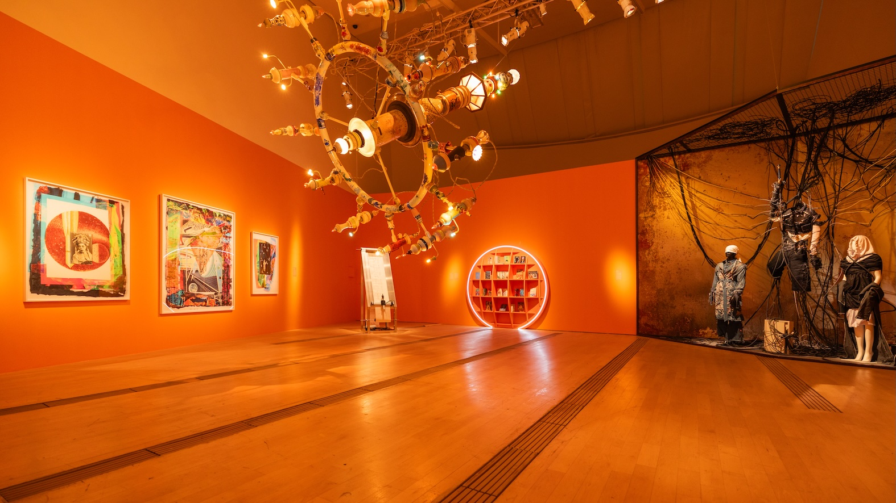
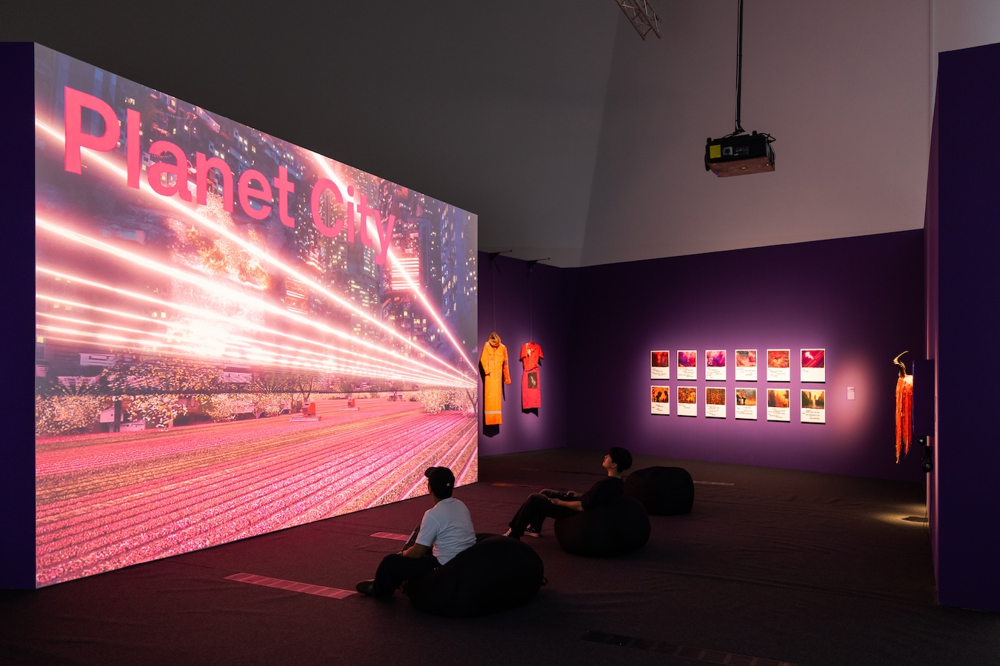
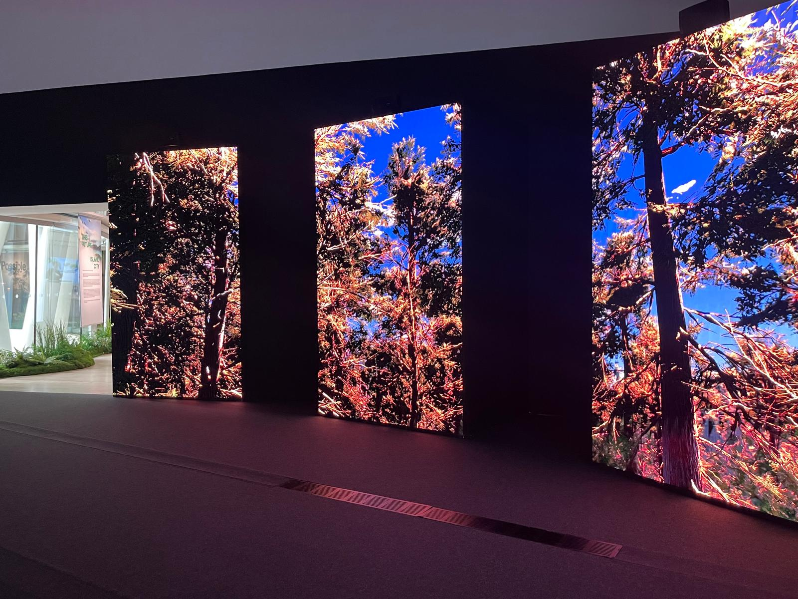
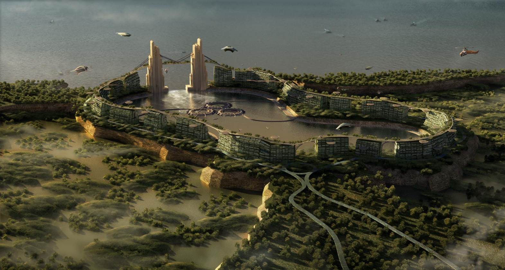
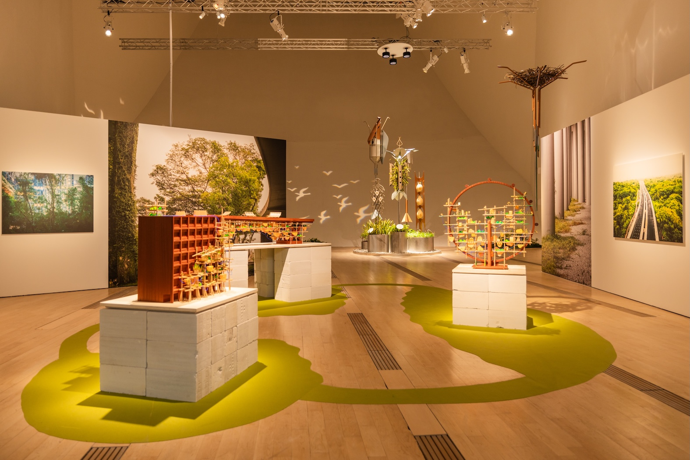

Whilst at ArtScience Museum, I co-curated Another World Is Possible with Liam Young. At a time when dystopian visions dominate popular culture, when ecologies are in crisis and skies are dark with machines, Another World Is Possible offered a different proposition. Bringing together over 100 works at ArtScience Museum, the exhibition argued that imagination is a radical act: that the future is not something that happens to us, but something already being made.
Unfolding across seven chapters, the show explored world-building across cinema, design, architecture, speculative fiction, and video games. Drawing on Afrofuturism, on Asian futurisms including Silkpunk, Spicepunk and Islandpunk, and on Indigenous cosmologies, it gathered voices from across Asia, Africa, and the Pacific to form an aesthetic of tomorrow that is luminous, organic, and alive with possibility.
The seven chapters moved from an examination of a century of dystopian cinema, through Afrofuturist practice, climate-focused design, and Singapore's own urban imagination, arriving at a new commission by Superlative Futures presenting speculative narratives by 25 young Singaporeans. The exhibition was presented in partnership with ACMI Melbourne, as a sequel to their exhibition The Future and Other Fictions, and was part of ArtScience Museum's SG60 season, celebrating Singapore's 60th anniversary.

Liam Young · Honor Harger · Joshua Lau · Joel Chin · Charleen Leo · Adrian George
Liam Young · Björk · Ken Liu · Debbie Ding · Ming Wong · Ong Kian Peng · Jakob Kudsk Steensen · WOHA · Jason Pomeroy · Finbarr Fallon · Darius Ou · Superlative Futures · Osborne Macharia · Serwah Attafuah · Leeroy New
DesignSingapore Council · ACMI Melbourne · Marina Bay Sands · ArtScience Museum SG60 Season



